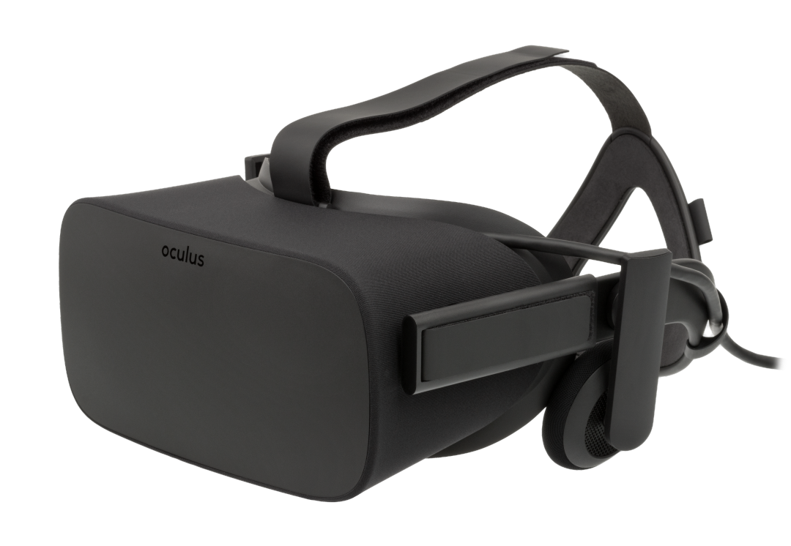
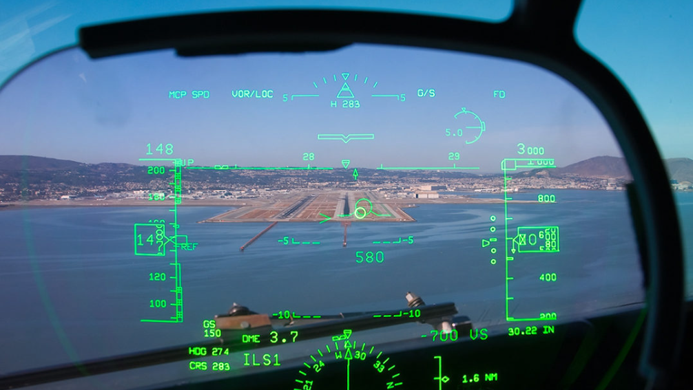

Quand on parle de réalité virtuelle aujourd’hui, on pense immédiatement aux casques VR qui se démocratisent de plus en plus dans un large panel de secteur. Mais, comme nous l’avons vu, la réalité virtuelle comprend en réalité toutes les technologies plongeant un utilisateur dans un environnement artificiel, et ce quel que soit le sens impliqué depuis des décennies.
La paternité de la première machine de réalité virtuelle est attribuée à Morton Heilig et à sa création, la machine "Sensorama", remontant à 1956. Ce dispositif novateur offrait une expérience multisensorielle en sollicitant plusieurs sens.
Il faudra attendre le début des années 90 pour assister à l'émergence des premiers casques de réalité virtuelle, tels que nous les connaissons aujourd'hui. La NASA a joué un rôle précurseur en impulsant la recherche sur les casques VR grâce à des programmes dédiés, conduisant à d'importants progrès dans ce domaine.
À cette époque, l'interaction avec ces dispositifs se faisait principalement par le biais d'un système haptiqueSystème Haptique : système permettant une connexion sensorielle et une communication entre un humain et un environnement par le toucher. Malgré ces avancées, les premiers casques "grand public" dans le domaine des jeux vidéo ont été marqués par des échecs commerciaux, attribuables à des prix prohibitifs, une qualité d'expérience médiocre et un inconfort notable. Ces facteurs ont freiné l'adoption généralisée, laissant le casque immersif demeurer un rêve inaccessible pour le grand public.
À partir de 2009, un passionné d'électronique, Palmer Luckey, se lance dans le développement d'un casque de réalité virtuelle, créant plusieurs prototypes au fil du temps. En partageant ses progrès en ligne, il attire l'attention de John Carmack, président d'id Software, un studio renommé dans l'industrie du jeu vidéo. Palmer décide également de lancer une campagne de financement sur KickstarterKickstarter : site de financement participatif où les gens donnent pour financer des projets de création, atteignant son objectif en moins de 24 heures.
Suite au succès de cette campagne, Palmer Luckey décide alors de créer sa propre structure nommée Oculus VR qui commercialisera le célèbre casque VR que l’on connait tous : L’Occulus Rift. Il vendra par la suite cette société à Facebook pour plusieurs milliards de dollars.
L’Occulus Rift est le premier casque VR «nouvelle génération» et grand public. C’est un casque filaire connecté sur ordinateur avec des manettes afin d’interagir avec l’environnement virtuel diffusé dans le casque. Il a plusieurs capteurs afin de trackerTracker : détecter continuellement la position et de l'orientation des objets et de l'environnement dans un espace physique le porteur du casque.
Tandis que pour la réalité augmentée, Sutherland, en 1968, a développé le premier système fonctionnel, le "Head-Mounted Display" posant ainsi les fondations de cette technologie émergente mais qui différait d'auhourd'hui. Bien que plusieurs dispositifs similaires aient émergé par la suite, ils étaient principalement à des fins expérimentales.
Dans les années 80, ce sont les systèmes HUD (Head-up displays)HUD : système affichant quelques informations à travers un petit écran transparent dans le champ de vision du pilote/conducteur qui sont développés, notamment dans l’armée. On retrouve actuellement ces HUD dans certains véhicules afin d’afficher des informations tels que la vitesse, chemins de destinations ou encore les panneaux rencontrés.
Par la suite, la NASA développe également un casque de réalité augmentée, préfigurant ce que sera le Microsoft Hololens 30 ans plus tard. Léger mais nécessitant de l’informatique embarqué, cet outil permet aux opérateurs d’ajouter une surcouche d’information sur les éléments physique. Plusieurs autres projets similaires verront le jour les années suivantes.
Il faudra attendre les années 90 pour que le terme « réalité augmentée » soit évoqué. En effet, Tom Caudell et David Mizell, deux salariés de chez Boeing, ont développé un outil destiné aux salariés du groupe travaillant sur les chaînes de production. Ce système rajoutait une couche d’informations sur certains éléments de la chaîne, permettant d’avoir un plan technique se fixant sur l’élément physique.
En 1994, Rekimoto et Takashi, deux scientifiques travaillant pour Sony Computer labo. développent NaviCam, le premier système de réalité augmentée capable de lire des marqueurs. Très basique et rapide, Il permettait de lancer des informations textuelles qui venaient se greffer au réel par le biais d’un casque équipé d’un HUD. Les marqueurs deviendront par la suite le support de référence afin de fixer des éléments virtuels dans le réel en offrant un temps de réponse très rapide.

Les marqueurs sont des repères visuels détectés par l’appareil afin d’effectuer une action. Ils peuvent prendre la forme d’une image ou d’un symbole mais doivent avant tout proposer un contraste important afin d’optimiser la détection. Ils servent de repères afin de fixer un élément en 3D par le biais de la caméra, indispensable au dispositif.
La première version « mobile » de réalité augmentée fut développée à la fin des années 90 et nécessitait un sac à dos connecté à un écran. L’ensemble était lourd, encombrant et limitait drastiquement les capacités de visualisation.
Ceci préfigurait malgré tout de ce que la réalité augmentée mobile allait devenir. L’avènement des téléphones mobiles, et plus particulièrement des smartphones a rendu possible la miniaturisation de ce type de dispositif et ont permis le développement d’applications réellement mobiles et pertinentes.